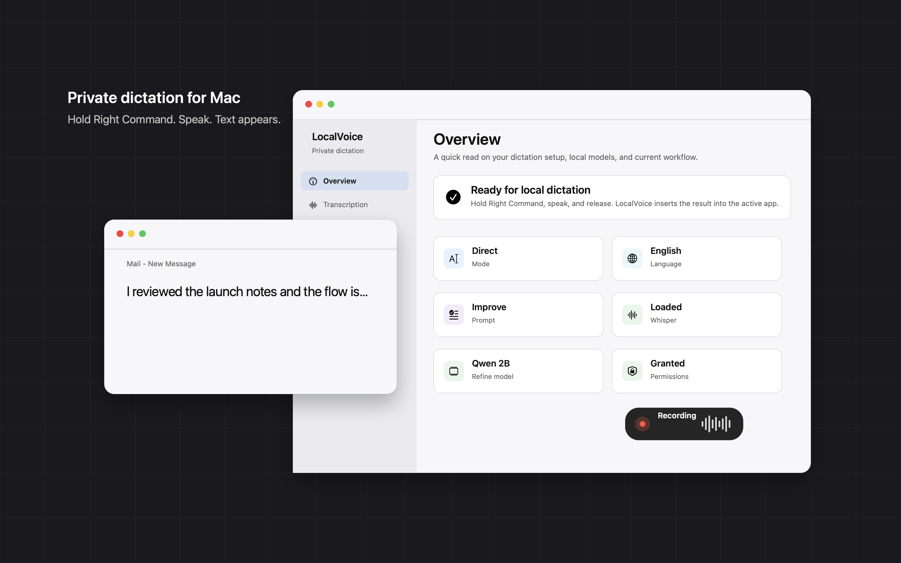
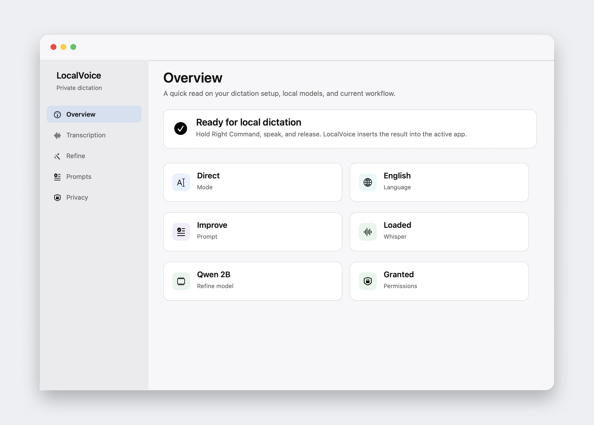
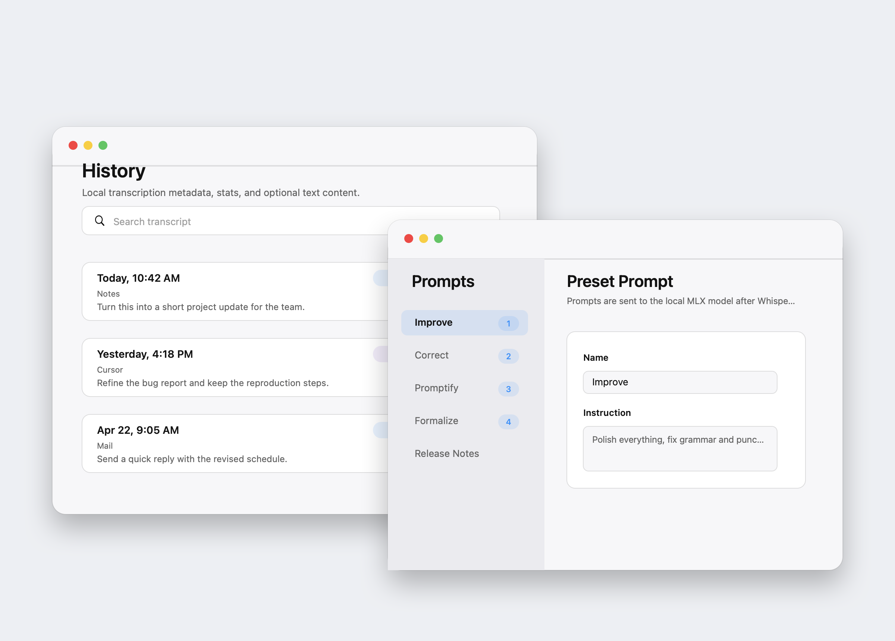

Hold Right Command
The global hotkey starts recording without changing focus or opening a separate editor.

Open source · macOS 14+ · Apple Silicon
Private voice dictation for Mac. Hold Right Command, speak, release, and your words appear in the active app. Whisper and optional MLX refinement run entirely on-device.
Current release is ad-hoc signed. First launch requires a one-time quarantine command.
Workflow
The global hotkey starts recording without changing focus or opening a separate editor.
WhisperKit transcribes locally. Refine mode can rewrite the transcript with MLX and your selected prompt.
LocalVoice inserts text into the focused field using Accessibility first, with pasteboard fallback when needed.
Product


Privacy model
LocalVoice has no cloud transcription service, no API keys, and no subscription. The app is MIT licensed, so the audio path is auditable.
Details
Hold Right Command for push-to-talk, or double-tap to latch and tap again to stop.
Press 1-9 while recording to temporarily select a rewrite prompt for that dictation.
Review recordings, search transcripts when saving is enabled, and export CSV for analysis.
LocalVoice recommends an MLX model tier based on your Apple Silicon chip and memory.
Install today
LocalVoice is currently distributed through GitHub Releases as an ad-hoc signed app. A Developer ID notarized DMG is planned, but not available yet.
Download LocalVoice.zip, unzip it, and move LocalVoice.app into /Applications.
Because the current build is ad-hoc signed, run this once before opening the app:
xattr -dr com.apple.quarantine /Applications/LocalVoice.app
Enable Microphone, Accessibility, and Input Monitoring in System Settings, then hold Right Command to dictate.
Requirements